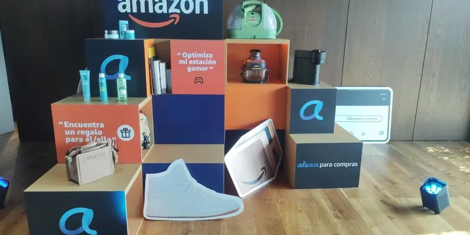

OKpolítico
OKpolíticoBuen Fin 2026: fechas, recomendaciones de Profeco y cómo identificar ofertas reales

La decimosexta edición del Buen Fin inició este 13 de noviembre y se extenderá hasta el martes 17, periodo en el que diversas cadenas de supermercados ofrecen descuentos en productos de la canasta básica y artículos de consumo cotidiano.
Compartir por WhatsAppRecomendaciones para el consumidor
La Procuraduría Federal del Consumidor (Profeco) exhorta a los compradores a elaborar un presupuesto previo para evitar comprometer gastos indispensables. Asimismo, sugiere realizar una lista de artículos necesarios para evitar compras por impulso y comparar precios en distintos establecimientos, tanto físicos como digitales.
Para verificar la veracidad de los descuentos, la Profeco pone a disposición la herramienta «Quién es Quién en los Precios», la cual permite consultar el historial de costos de productos como televisores, celulares, computadoras y electrodomésticos. Esto ayuda a identificar si una promoción representa un ahorro real o si el precio fue modificado previamente.
✉️ Recibe lo importante del día en tu correo. Suscríbete gratis →Uso de meses sin intereses y compras seguras
Antes de optar por pagos a meses sin intereses, la Profeco recomienda evaluar la capacidad de pago personal, revisar las instituciones bancarias participantes, consultar si existen intereses ocultos y comparar el precio de contado. Es fundamental conservar todos los comprobantes de compra, tickets y facturas para cualquier aclaración, garantía o devolución posterior.
En el ámbito digital, se recomienda verificar que la dirección electrónica del comercio sea segura. Por su parte, plataformas como Amazon han integrado herramientas de inteligencia artificial para asistir a los usuarios en la comparación de características y precios de productos, buscando facilitar la toma de decisiones informadas durante estos cinco días de campaña.
Despliegue de atención al consumidor
Durante esta edición, la Profeco desplegará más de mil servidores públicos organizados en 350 brigadas para brindar orientación y atender inconformidades. Además, se instalarán 169 módulos de atención en zonas de alta afluencia comercial para apoyar a los consumidores que requieran presentar una queja o denuncia formal.
Actualización 13/11 07:33 h
La iniciativa, impulsada por el Gobierno Federal a través de la Secretaría de Economía en conjunto con la Confederación de Cámaras Nacionales de Comercio, Servicios y Turismo (Concanaco Servytur), busca fomentar el consumo en establecimientos formales y dinamizar la actividad económica del país.
Durante los cinco días de vigencia, las tiendas físicas operarán bajo sus horarios habituales, mientras que las plataformas digitales mantendrán sus ofertas activas hasta las 23:59 horas del próximo martes. Los comercios han anunciado promociones que incluyen descuentos directos, bonificaciones bancarias y esquemas de meses sin intereses.
El sector tecnológico concentra una parte significativa de las promociones. En plataformas como Amazon, se han reportado descuentos de hasta el 70% en artículos seleccionados. Entre los productos destacados figuran pantallas de diversas marcas, , además de una amplia gama de teléfonos inteligentes y computadoras portátiles.
, con precios que varían según las especificaciones técnicas. Asimismo, se ofrecen descuentos en accesorios para el hogar, artículos de belleza y electrodomésticos, sujetos a las condiciones de pago y promociones bancarias específicas de cada institución financiera participante.
La Procuraduría Federal del Consumidor (Profeco) exhorta a los compradores a utilizar la herramienta 'Quién es Quién en los Precios' para verificar el costo histórico de los artículos y determinar si la oferta representa un ahorro real. La autoridad enfatiza la importancia de comparar precios entre distintos establecimientos y plataformas antes de concretar una transacción.
Otras medidas sugeridas incluyen definir un presupuesto máximo, priorizar la adquisición de bienes necesarios para evitar compras impulsivas, verificar las condiciones de los meses sin intereses y asegurar que las compras se realicen en sitios electrónicos oficiales y seguros. Se recomienda conservar tickets y facturas para cualquier aclaración posterior.
Actualización 13/11 07:49 h
La oferta comercial de este año destaca por una amplia gama de dispositivos electrónicos. En el segmento de telefonía, se encuentran equipos como el Samsung Galaxy S26 Ultra con un precio de 20,498 pesos y el Motorola Razr 60 Ultra por 26,074 pesos. Asimismo, el mercado de computadoras y tabletas incluye opciones como la HP Victus 15 en 15,999 pesos y la Honor Pad 10 por 7,699 pesos.
En cuanto a entretenimiento y hogar, la disponibilidad de pantallas abarca modelos como la TCL de 65 pulgadas por 6,299 pesos y la Samsung Crystal UHD de 70 pulgadas en 9,599 pesos. La categoría de videojuegos también participa con consolas como el Nintendo Switch 2 desde 9,899 pesos y paquetes de PlayStation 5 a partir de 11,870 pesos.
Un componente clave para maximizar el ahorro durante esta edición son las promociones bancarias, que permiten combinar los descuentos directos en los productos con bonificaciones adicionales. Instituciones como Santander, HSBC, Banamex y BBVA ofrecen esquemas de bonificación que pueden alcanzar hasta el 35%, además de facilidades de pago a meses sin intereses de hasta 24 meses en artículos participantes.
La campaña, que llega a su edición número 16, es una iniciativa coordinada entre el sector privado y el Gobierno Federal, con la participación de la Secretaría de Economía y la Concanaco Servytur. El objetivo central es fortalecer la actividad económica mediante el consumo en establecimientos formales durante los cinco días de duración del evento.
A pesar de la intensidad de las ofertas, el llamado a los consumidores es a mantener la prudencia financiera. Se recomienda verificar los precios reales antes de realizar cualquier transacción, ya que no todos los descuentos anunciados representan el ahorro esperado. La comparación de costos y la planeación del gasto son herramientas esenciales para evitar compras impulsivas y asegurar que las adquisiciones realmente se ajusten al presupuesto familiar.
Las plataformas digitales mantendrán sus ofertas activas hasta el cierre de la jornada el 17 de noviembre a las 23:59 horas, mientras que los establecimientos físicos operarán bajo sus horarios habituales. Es fundamental que los compradores revisen las condiciones específicas de cada promoción y las políticas de las tiendas para aprovechar los beneficios de manera informada.
Actualización 13/11 10:11 h
Aunque la campaña arranca formalmente este 13 de noviembre, el horario de inicio depende de cada establecimiento. Mientras que algunas plataformas de comercio electrónico activaron sus ofertas desde las 00:00 horas de este viernes, las tiendas físicas operan bajo sus horarios habituales de apertura. La jornada concluirá el martes 17 de noviembre a las 23:59 horas, sujeto a las políticas de cada comercio.
En el caso específico de Bodega Aurrera, la cadena no ha establecido una hora única para el inicio de sus promociones en todas las sucursales. Por ello, se sugiere a los consumidores verificar los horarios de atención de la tienda más cercana o consultar el catálogo disponible en su sitio web oficial.
La Procuraduría Federal del Consumidor (Profeco) pone a disposición de los compradores la herramienta 'Quién es Quién en los Precios para El Buen Fin'. Este sitio permite consultar costos históricos de diversos artículos, como electrodomésticos, pantallas y celulares, para identificar si las ofertas representan un ahorro real frente a precios previos.
Es fundamental verificar los requisitos para meses sin intereses, así como las restricciones de montos mínimos y tarjetas bancarias participantes antes de concretar cualquier transacción.
Durante estos cinco días, los comercios participantes ofrecen promociones en categorías como línea blanca, tecnología, hogar y abarrotes. Es importante recordar que la disponibilidad de productos y los descuentos están sujetos a las políticas de cada vendedor.
Actualización 13/11 13:56 h
Cadenas como Walmart, Soriana, Bodega Aurrera y Sam's Club participan en la temporada con descuentos en categorías que incluyen café, aceite, cereales, enlatados y productos de limpieza. En el caso de Walmart, su campaña denominada 'El Fin Irresistible' comenzó el 5 de noviembre y concluirá el 18 de este mes, permitiendo compras en sucursales, en línea y mediante su aplicación.
Sam's Club mantiene promociones hasta el 18 de noviembre, ofreciendo hasta un 30% de descuento en enlatados y semillas, 25% en cereales y 20% en café, bebidas y aceites. Por su parte, OKpolítico recuerda a los consumidores que las condiciones de ahorro varían según la tienda, pudiendo tratarse de rebajas directas, bonificaciones bancarias o promociones exclusivas para socios que requieren membresía vigente.
Para realizar compras inteligentes, la Procuraduría Federal del Consumidor (Profeco) habilitó el micrositio 'Quién es Quién en los Precios'. Esta herramienta permite a los usuarios consultar y comparar el costo de diversos productos,
El sistema despliega los precios más bajos, más altos y el promedio registrado en los establecimientos locales. Es recomendable que los compradores verifiquen si el establecimiento está registrado oficialmente en el portal del Buen Fin y consideren factores adicionales como los gastos de envío o los requisitos de pago antes de concretar cualquier adquisición.
Sigue viendo
- 📺 Marcelo Ebrard: De jefe de gobierno a negociador del T-MEC bajo investigación
- 📺 La caída del sistema: el expediente de la elección de 1988
- 📺 Marcelo Ebrard: De jefe de gobierno a negociador del T-MEC bajo investigación
- 📰 Cyber Monday 2026: Fechas y qué esperar de las ofertas en línea en México
- 📰 Zapopan ofrece descuentos de hasta 75% en diversos impuestos y multas municipales
- 📰 Revisar el historial de precios ayuda a detectar descuentos falsos antes del Buen Fin
Con información de
eleconomista.com.mx · tvazteca.com · record.com.mx · xataka.com.mx · cronica.com.mx · milenio.com · merca20.com · elsiglodetorreon.com.mx · radioformula.com.mx